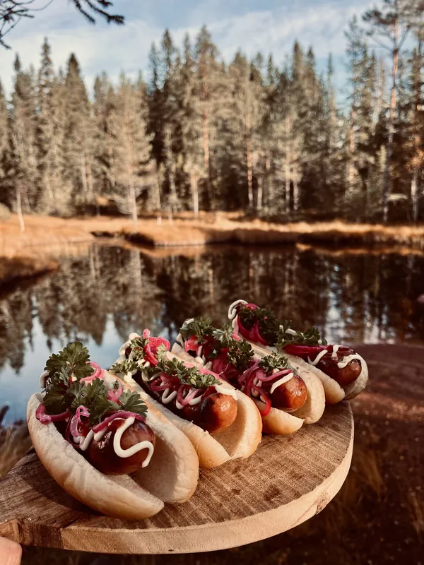
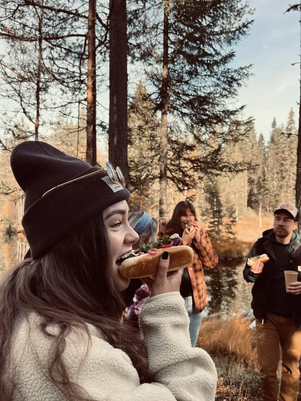
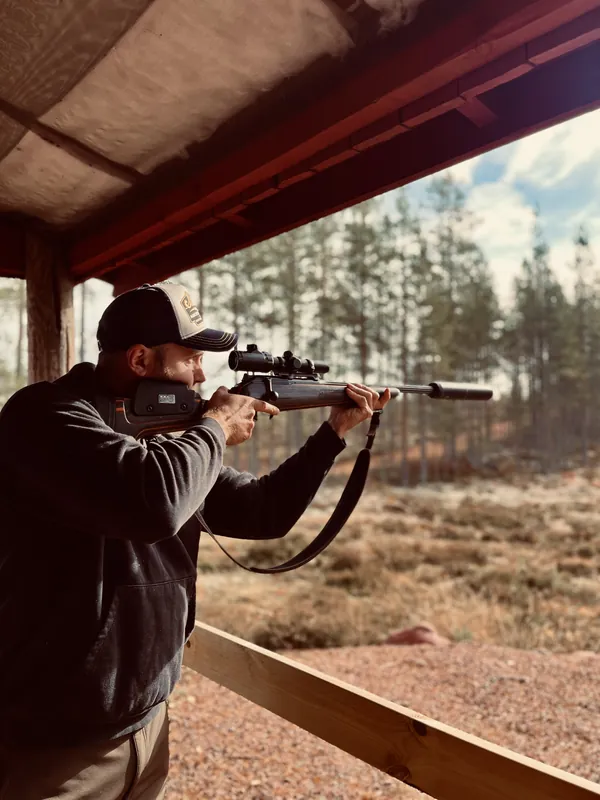
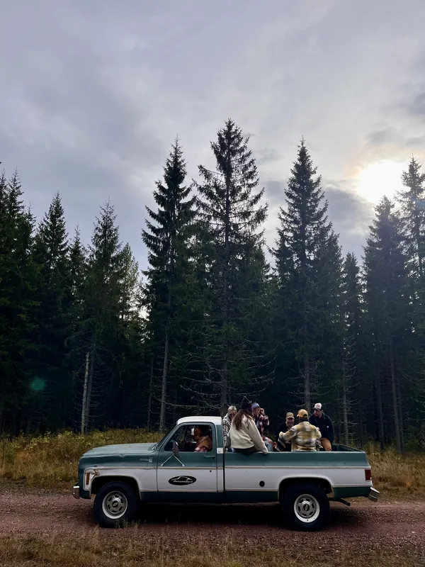
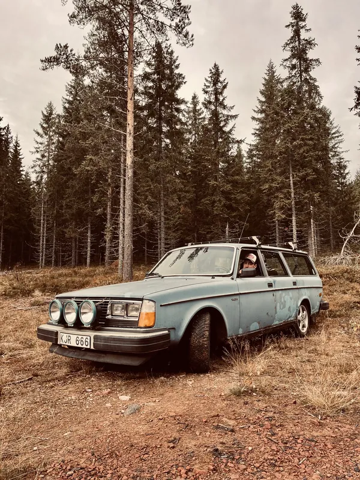
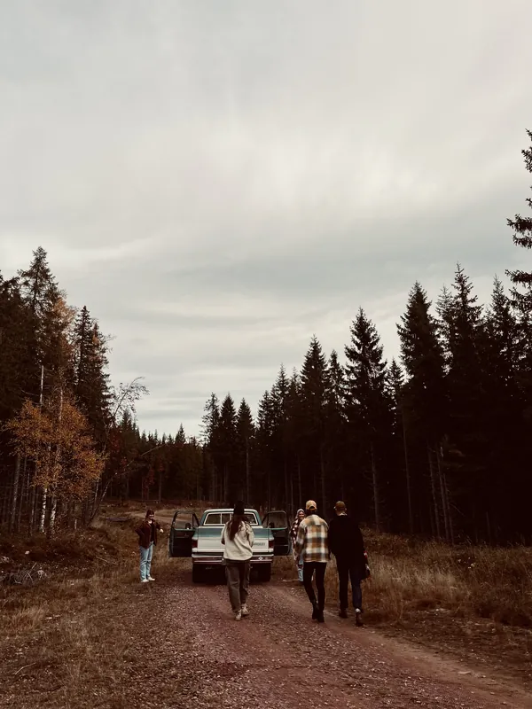

Vi är inte klara än.
Men när vi är det blir Vildbyn en äventyrsbutik med bar mitt i Älvdalen. Här köper du grejerna, hyr det du glömde hemma och bokar dagens äventyr. Sen tar vi en öl och snackar om hur det gick.
Det blir vilt, det blir roligt och det blir inte så jäkla noga.
PS. I baren öppnar vi flaskorna med en uppstoppad älgröv. Mer än så säger vi inte just nu.
Sånt vi håller på att snickra ihop
- Volvo 245 på grusväg
- Bastuflotte
- Ring i älven
- Älgsafari
- Kanot och SUP
- Paintball
- Fisketur med guide
- Skjutbana
…och en del annat som vi inte hunnit hitta på än.
En helt vanlig dag i skogen





